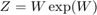
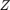
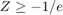

pvl_lambertw
Computes values for the Lambert W function W(z).
Contents
Syntax:
W = pvl_lambertw(Z)
Description:
pvl_lambertw computes the principal value of the Lambert W Function, the solution of .  may be a complex scalar or array. For real , the result is real on the principal branch for .
The algorithm uses series approximations as initialial values and Halley's method as developed in Corless, Gonnet, Hare, Jeffrey, Knuth, "On the Lambert W Function", Advances in Computational Mathematics, volume 5, 1996, pp. 329-359.
% Original code by Pascal Getreuer 2005-2006, modified by % Didier Clamond, 2005. Code downloaded from % http://www.getreuer.info/home/lambertw and modified for inclusion in % PVLib. % % Matlab includes a lambertw.m function using a very similar algorithm % in the Symbolic Math Toolbox. %
Inputs
- Z - scalar or vector of values at which W(Z) will be evaluated.
Output
- W - scalar or vector of values of W(Z) on the principal branch.
Refereces
[1] R.M. Corless, G.H. Gonnet, D.E.G. Hare, G.J. Jeffery, and D.E. Knuth, 1996. On the Lambert W Function, Advances in Computational Mathematics, vol. 5.
Example
Z = pvl_lambertw([0 exp(1) 10^6])
Z =
0 1.0000 11.3834
Copyright 2015 Sandia National Laboratories